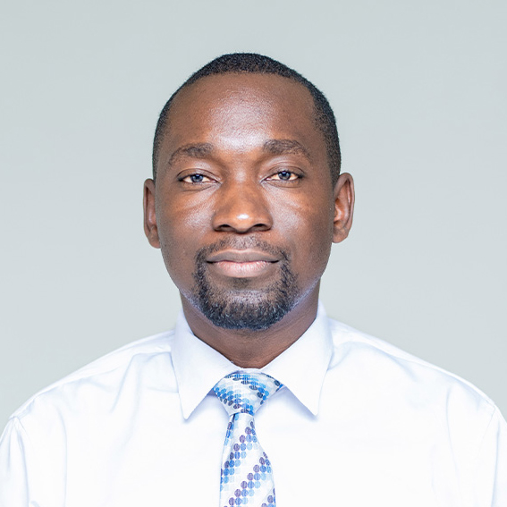

Full stack software engineer with 7+ years building and supporting production systems for education and health in Malawi. I'm a Systems Developer at MUST today, and I'm adding data science and AI to my engineering through an MSc.

Software engineering is my core. I'm building on it with data science and AI, so the systems I build can do more with the data they hold.
Systems I've built and supported across education, health and the web.
Seven years building and supporting academic and health information systems in Malawi.
I'm Noel Ng'ona, a full stack software engineer from Malawi. I'm a quick learner and a good communicator, and I've worked across health and academic information systems: deploying health systems at facilities with Baobab Health Trust, building university systems at LUANAR, and now developing platforms at the Malawi University of Science and Technology.
Much of my work is modernising legacy systems and turning everyday processes into reliable software that non-technical staff can use. I care about systems that are dependable, auditable and built around real users.
Software engineering remains at the centre of what I do. I'm adding data science and AI to it through an MSc in Data Science, and I'm keen on how AI can drive sustainable development in Malawi and beyond. I'm open to roles in any sector, not just education.